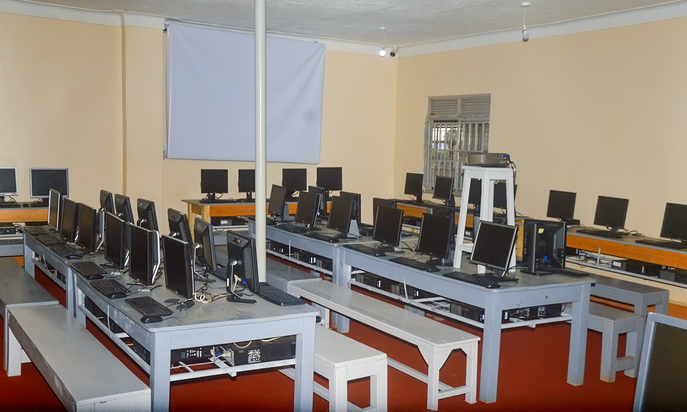

Vision
A leading provider of high quality holistic secondary education.

About us
Kasenyi Secondary School stands in the West Division of Mubende Municipality, beside Kasenyi Caltex. Founded in 1985, it has grown from a local day school into a large UNEB centre serving families across greater Mubende.
Teaching is learner-centred. Staff are certified, classes run from Senior 1 to Senior 6, and extra-curricular life — debate, football, netball, music, dance and drama — is treated as part of the curriculum, not an afterthought.
“We exist so that every learner who walks through our gate can reach their highest potential and leave as a responsible citizen.”
Vision
A leading provider of high quality holistic secondary education.
Mission
To provide an affordable high quality secondary education that empowers learners to reach their highest potential and become responsible citizens.
The school is headed by Mr. Ngirabakunzi John. Day-to-day academic work is coordinated by the Director of Studies, with a Board of Governors overseeing strategy, safeguarding and finances.